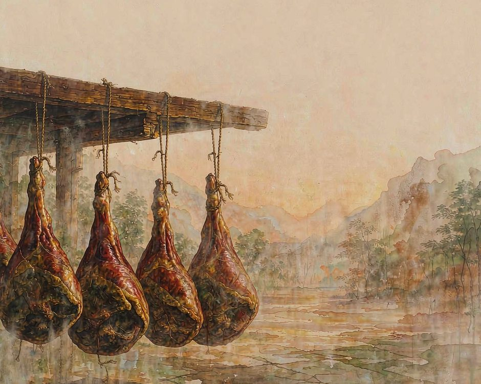
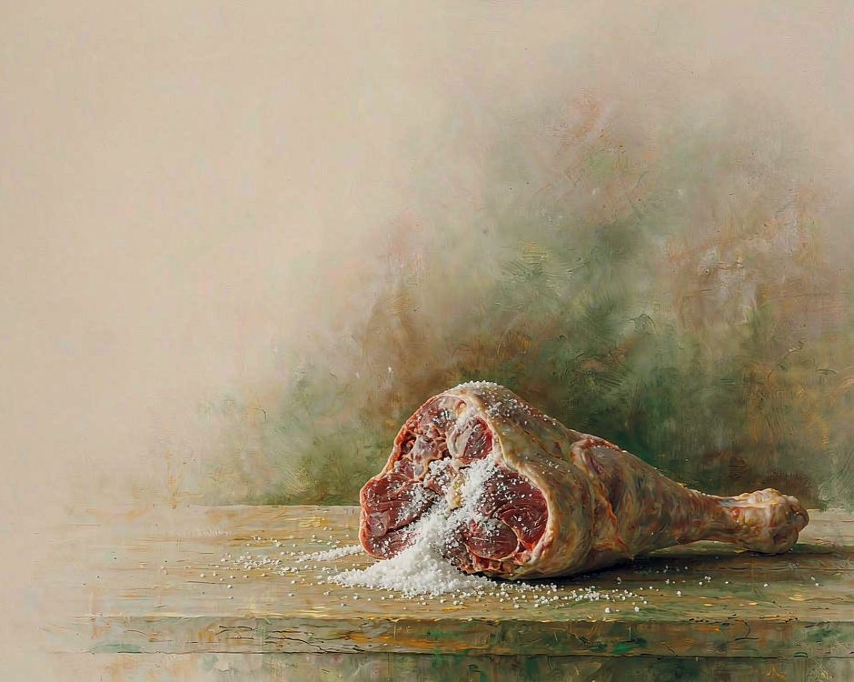
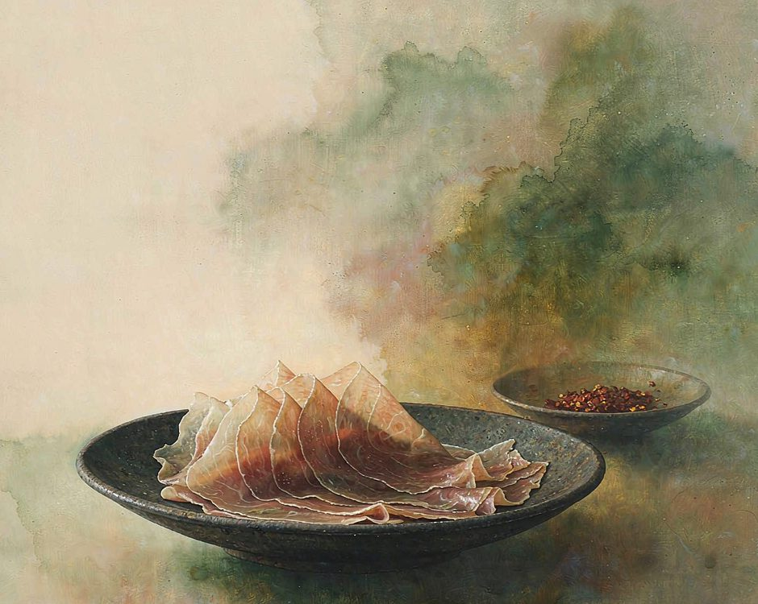

宣威的火腿挂在墙上，一挂三年。

三年里有一段不能吃。腌好上架、晾开之后，头八个月只能看不能动。肉还在滴水，油还没渗到皮上，腿身还是硬的。这八个月过去，风味才真正开始往里走。
这条腿挂在墙上的样子，是活的。它在瘦，也在失水。表面慢慢收下去，颜色从红变成酱色，骨头那端干得最狠。急的人两个月就下来吃，尝不到什么东西。愿意等的人，第四个月以后能从脚尖尝到咸香。
猪要选肥瘦分明的
宣威火腿的原料是乌金猪。这种猪后腿特别厚，脂肪和瘦肉分层清楚，比例刚好。腿要用整条后腿，骨头上那截不能劈开，劈开了渗盐就散。
选料这一步就已经在决定成品了。肥太多的腿挂三年会塌，瘦肉太多的挂三年会干。分明的腿才能既出油又不失形。
腌的时候用盐，不用酱油。盐要一层一层抹匀，抹完还得用手按，把盐压进肉里。抹完挂起来，往下滴水。滴在地上的水一天比一天少，这个过程本身就是一个计时器。

盐抹得厚还是薄，决定后面的路。盐厚了，肉出得慢，咸味重；盐薄了，容易淡。中间那个度全靠手掂量。同一批猪，两个人腌出来不是一个味道。
有的做法会在腿上抹一点酒。不抹也行，盐和时间已经够。抹酒是提香，不是必需。
挂在哪，决定它的性格
宣威海拔高，湿度低，日照足。这三个条件凑在一起，才挂得住火腿。
低海拔的地方湿度高，腿挂不长，几天就发霉长毛。高海拔太干太快，腿会裂开，瘦肉抽成柴。只有这种不高不低的地方，能让它慢慢失水，慢慢出油。通风也有讲究。腿挂在通风的地方，风能穿过去，但不能直吹。直吹的那一面会先干，挂在那一面的肉会先硬。
所以宣威人家的院子里，常年挂着一排腿。不是为了好看，是为了让风穿过去。阳光、湿度、风，三样一起在做事，没有一样能单独把一条腿变成火腿。
那八个月不能吃，是因为这段时间火腿自己还在调整。盐要吃进肉里，油要走到皮上，肉要慢慢收紧。这些事急不来。你以为的等待，其实是它在干活。
挂着的日子并不空。看腿的位置能知道季节，腿身收缩的程度能知道还剩多久。老手看一眼就知道这条腿到了哪一步。院子里的腿一年比一年多，是家里过去三年攒下来的。
时间在这件事上不是消耗，是材料。
吃的时候要等另一件事
三年到了，还不能马上吃。
新下来的腿要再等，等它彻底干透。切开的时候要能看见瘦肉是红的、透明的，脂肪是雪白的。颜色不对，就还要放。
整条腿吃完要很久。一条腿切出来能吃很久，家里可以吃半年。吃到收尾那一刀的时候，那户人家的墙上就空了一格。那一格空着，等着挂新腌的上去。火腿挂在墙上是一个循环。吃完，腌，腌完再挂。宣威人过日子，是按这个循环算的，不是按年。
吃的时候有规矩。一整条腿不能一顿吃完，要切薄片。宣威人吃火腿，第一片不蘸料，就那么干吃。为的是先尝到盐和肉本身的味道。

第二片才蘸辣椒。第三片配一碗米饭。第四片煮进汤里。四片吃下来，味道才慢慢打开。
火腿要切到透光才对，薄到能看见背后的碗。厚度是练出来的，靠眼不靠尺。切得薄了在火上稍微一烤，油脂就出来，边缘会焦，那一层焦香是整条腿最直接的表达。
第一片干吃的时候，最先尝到的是咸。咸过去之后，等一会儿，甜才出来。这种甜不腻，是风干出来的。熏出来的火腿，烟味会盖住肉香；风干出来的，火腿有肉香，还有一点点坚果的味道。
小孩子第一次吃火腿，多半被咸到皱眉。咸是咸的，可那一口之后，会开始想吃第二口。
这就是宣威人为什么能等三年。
诚实的部分
有一件事得说清楚。宣威火腿好吃，是这个地方独有的地理做出来的。搬到别处，同样的猪，同样的盐，出来的不是这个味。
那股咸香里有一部分是风带来的。宣威的山风干得早，晚上冷，白日照得足。腿在这些风里挂过，日夜温差都吃进去了。搬到湿的地方挂，同样的火腿会变成另一种东西。
现在做火腿的家里，年轻人也在变少。会腌的人还有，会等的人少了。能等三年这件事，本身就是一种手艺，它比会腌更难。
产量提上来之后，价钱也变过。有一年行情不好，压了不少货。厂子收不到钱，农户家里堆着腿等价钱。那种时候最难受的不是亏钱，是已经挂在墙上的腿还在一天天变老，卖不卖都得等。
还有一个问题，市场上仿的太多。别的猪、别的腌法，挂一挂就冒名字。真正慢工出来的，价钱反而不好说。
买的人也有委屈。花的钱不少，拿到手的不对味，找不到人说理去。这种事在本地发生过很多次，到头来都是靠熟人才知道哪家可信。名声这个东西，是被一次次买错之后逼出来的。
这些照实说，是因为不想把一门手艺写得太顺。三年这个数字背后，有一部分人不按时拿钱，还在替时间看着场。
想种回去
不必买一条火腿，可以先学等。
买一块咸肉，或者一块风干过的豆腐干。回家挂在厨房的通风处，不裹纸，不密封。隔几天翻一次面。一个月之后，那块东西会变成另一个东西。
这个动作的意义是，你在替一样东西守一段时间。城市里很少有这种守着。时间不走了，东西在变，这种等待是少数人才能收到的回报。挂的过程里，你会开始认出变化。哪天表面开始发皱，哪天颜色开始转深，哪天摸上去不再软。这些都是时间留下的记号，不用谁提醒你。
或者学一次腌。不用火腿，用一小块肉，或者一把青菜。盐要抹匀，要等，要忍住别提前打开。这个动作不复杂，难的是不动手。
腌完那天尝一口，跟腌之前比。变了什么，说得出来就说明你真看进去了。
然后把这件事说给一个人听。说出去的时候不带着炫耀，是一条线索。听到的人或许也去厨房挂一块肉，一个人挂，两个人挂，这件事就开始传了。
（小练习。今天买一样需要放几天才能吃的东西，咸肉、干货或者一款需要醒的酒。把它挂在看得见的地方，每天看它一眼。）
厨房里挂着一块正在等的东西，这个厨房会跟别的不一样。
你家里现在有没有一样正在等的东西。